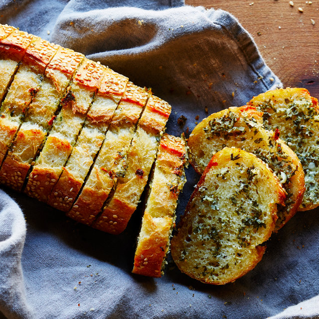

Garlic Bread

Garlic bread, a timeless culinary classic, exudes an irresistible allure with its aromatic blend of flavors and comforting simplicity. Crafted from slices of French bread or baguette, this delectable creation is transformed into a culinary masterpiece through the infusion of a rich garlic butter mixture. Fresh cloves of garlic are finely minced and whipped into softened butter, creating a luscious paste bursting with robust flavor. A delicate sprinkling of salt and pepper enhances the savory profile, while optional additions such as chopped parsley add a touch of vibrancy to the ensemble.
Once meticulously spread onto the bread, the garlic butter mixture undergoes a tantalizing metamorphosis in the oven. As the bread bakes to a golden hue, the air is enveloped in a fragrant symphony of garlic, enticing appetites with its aromatic embrace. The finished garlic bread emerges with a crisp exterior, yielding to reveal a tender, buttery crumb saturated with the essence of garlic. Whether paired with pasta, soups, or enjoyed as a standalone treat, garlic bread captivates palates with its harmonious blend of flavors, offering a comforting indulgence that transcends time and culinary trends.
ingrediants
- 1 loaf of French bread or baguette
- 1/2 cup (1 stick) unsalted butter, softened
- 3-4 cloves of garlic, minced
- 2 tablespoons fresh parsley, finely chopped (optional)
- 1/2 teaspoon salt
- 1/4 teaspoon black pepper
- 1/4 teaspoon red pepper flakes (optional)
- 1 cup shredded mozzarella cheese (optional)
steps
- Preheat your oven to 375°F (190°C).
- In a small bowl, combine the softened butter, minced garlic, chopped parsley (if using), salt, black pepper, and red pepper flakes (if using). Mix until well combined.
- Slice the French bread or baguette in half horizontally, creating two long pieces.
- Spread the garlic butter mixture evenly over the cut sides of the bread.
- If desired, sprinkle shredded mozzarella cheese evenly over the buttered bread.
- Place the buttered and cheese-covered bread on a baking sheet, cut side up.
- Bake in the preheated oven for 10-15 minutes, or until the bread is toasted and the cheese is melted and bubbly.
- Once done, remove the garlic bread from the oven and let it cool for a few minutes.
- Slice the garlic bread into individual portions and serve warm.
- Enjoy your delicious homemade garlic bread as a side dish or appetizer!